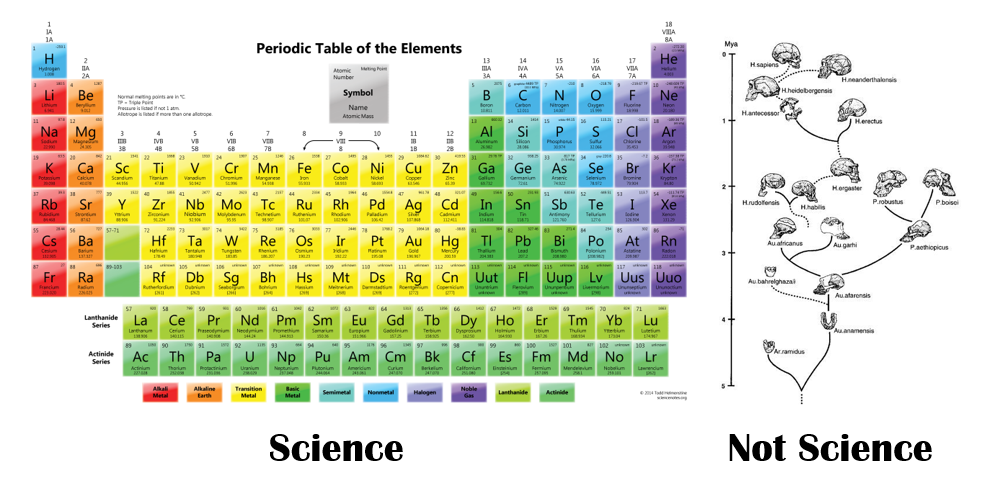

|
|---|
| Feature Article - December 2021 |
| by Do-While Jones |
This final newsletter looks back over a successful 25 years of science education.
I'm not dying--but I am past my manufacturer's expiration date. I have lived longer than both my parents, half of my grandparents, and seven out of eight of my great grandparents. I can do the math.
I don't want the monthly newsletters to suddenly stop without explanation. This will be the last newsletter which brings things to a neat conclusion.
Looking back over the past 302 newsletters is like looking through photo albums of all the wonderful trips we have taken together. They contain many great memories that I am happy to have shared with you. It's been a good run--but it can't go on much longer.
The theory of evolution can't go on much longer, either. It gets weaker every year, and is now on political life-support. If not for the worldview that depends upon it, it would have died long ago.
The more scientists look for evolutionary answers, the more problems they find. They are running out of straws to grasp, so the number of reports about the theory of evolution in the popular press and scientific journals has decreased significantly from what it was when we started writing this monthly newsletter. It used to be hard to decide which of the many articles published that month to discuss. Recently it has been hard to find anything to write about.
Looking back on the past 302 newsletters containing more than 800 articles, this one thing stands out: Our past criticisms are still true; but many of the things we criticized have been abandoned by evolutionists. If we wrote those articles today, we could be correctly accused of attacking straw men that nobody believes--but evolutionists believed those things at the time. The footnotes prove that evolutionists believed those things--but now the links to many of the passages we quoted from the popular press no longer function because they have been discreetly removed from the Internet. You have to go to a real library and ask the librarian to go back in the archives to find the old magazines to check them out.
Twenty years ago, we showed you pictures of exhibits that were displayed in Chicago's Field Museum of Natural History which have since been removed because they have been disproved. Evolutionists really used to believe those things.
Of course, when the older articles were written, they were displayed on VGA monitors with just 640x480 resolution, or printed on black-and-white 7x9 dot matrix printers, which is why the older pictures are poor quality, and the text used bold font for emphasis. The newer articles have higher resolution pictures--but kept the same look for the articles for consistency.
If something significantly relevant to the theory of evolution surfaces in the future, we will post an article here with a link to it from the ScienceAgainstEvolution.info Facebook page. Otherwise, our website will not be updated monthly; but all the old articles will remain available. You can access them by date using the Link to Past Newsletters. The Link to Topical Index will still allow you to access them by subject. The search boxes on these pages allow you to search for specific words on our website.
There are over 800 articles on our website. Since that can be overwhelming, here are summaries of some of our favorite articles from past newsletters to get you started.
|
|---|
The theory of evolution also has three necessary conditions (spontaneous origin of life, creative mutations, and a very long time).
 |
|---|
If any of the three necessary conditions is absent, the process cannot occur. Science has proved that life cannot originate spontaneously, mutations don't create new functionality, and there would not be enough time for the other two conditions to produce all the various forms of life even if they did miraculously happen. None of the three necessary conditions for the theory of evolution to be true are present.
It was once commonly believed that Stanley Miller's 1953 experiments showed how life could have begun. Our article about his death, Stanley Miller's Final Word, tells how he was still looking for the answer when he died in 2007. He spent 54 years trying to find a plausible way life could have begun naturally, without success. How many times must an alchemist fail to turn lead into gold before giving up and admitting it can't be done? How many times must origin of life experiments fail before giving up and admitting it can't happen?
Our articles Looking For Life and One Million Dollars! described what had to be proved to win the $1,000,000 Origin of Life Prize in 2005. Nobody won the prize, and it is no longer being offered. The unanswered questions about how life could have originated naturally are still unanswered, and they won't be answered because it is necessary to violate scientific laws to answer them.
Discover magazine ran a contest to see who could explain the theory of evolution in two minutes. It was a spectacular failure. The "winning" entries were so bad, Discover posted them with no fanfare, and then quickly deleted them from their website. We thought it was hilarious, and told why in A Tale of Two Prizes and Evolution Video Finalists. It inspired our award-losing video, Evolution for Intellectuals, which is certainly worth two minutes of your time to watch.
The theory of evolution is based on the false notion that small changes (microevolution) can result in new functionality (macroevolution) given enough time. This supposedly happens through natural selection.
Artificial selection is like natural selection on steroids because nothing is left to chance. Artificial selection always favors the desired outcome.
Since 1896, men have been using artificial selection to breed horses that can win the Kentucky Derby. Up until 1960, the winning times tended to get 1.25 seconds faster every 10 years. But the Kentucky Derby has been "the most exciting two minutes in sports" since 1960 because the winning time is stuck at two minutes and two seconds. There is a limit to how fast a horse can run. Our article, The Kentucky Derby Limit, which we update every year, shows this to be true.

|
|---|
Of course, breeding requires sex, which is a real problem for evolutionists. We usually address this in our February newsletters (because of Valentine's Day). Our favorite articles about the problem sex causes for the theory of evolution are Birds and Bees and Sex and Violets.
Closely related to sex is love. Love (altruism) is difficult for the theory of evolution to explain because it violates the law of the jungle, as we explained in What's Love Got to do With It?
Evolutionists thought DNA analysis would prove evolution beyond a shadow of a doubt because comparison of DNA would show which species are most alike and therefore must share a close common ancestor.
|
Animal relationships derived from these new molecular data sometimes are very different from those implied by older, classical evaluations of morphology. Reconciling these differences is a central challenge for evolutionary biologists at present. Growing evidence suggests that phylogenies of animal phyla constructed by the analysis of 18S rRNA sequences may not be as accurate as originally thought. 1 |
We brought this to your attention in our March, 1998, article, The Failure of Genetics. We gave specific examples of the problem in our article, The DNA Dilemma. The headlines our article quoted from the scientific magazines proclaiming the dilemma told the shocking story then, and it hasn't really changed. It is still difficult to reconcile DNA analysis with comparative anatomy and the fossil record.
The similarity of human DNA to chimpanzee DNA was the subject of several of our articles, including Chimps Are Like Us. The recent popularity of using DNA to find (human) relatives inspired our article Ancestry from DNA which again showed that only a small part of the DNA had to be analyzed in a particular way to get the desired answer.
Another Man's Junk addressed the fallacy that most of the DNA molecule is junk, so mutations in "junk DNA" cannot be used to determine the time when species diverged.
We tried not to repeat the same arguments you often find on creationist sites about the age of the Earth. Instead, we (to our knowledge) were the only ones to address the Uranium Disequilibrium problem. We think that is an irrefutable argument that the Earth has to be less than 2 million years old.
We are also immodestly proud of our Paleomagnetism Busted! article and video.
Some of the astronomy articles relate to the age of the Earth.
The Age of the Moon shows how the Apollo 11 moon rocks were dated using various radiometric techniques, resulting in ages for the Moon ranging from 40 million years to 8.2 billion years. Of 116 date calculations, only 10 of them fall in the range of 4.3 to 4.56 billion years (the alleged age of the Moon), and 106 don't.
Just as the movement of air can be used to generate wind power, the movement of water due to the ocean tides can be used to produce tidal energy. Tidal energy comes from the moon because the gravitational pull of the Moon causes the tides. The law of Conservation of Energy states that for every watt of energy the Earth's oceans gain, the Moon must lose an equal number of watts. As the Moon loses kinetic energy, it slows down and moves into a slower, higher orbit.
The change in distance between the Earth and the Moon has been carefully measured over the past several decades. It can be used to put a maximum value on the length of time the Moon has been orbiting the Earth. The math is difficult, but the series of articles beginning with Our Escaping Moon explain it in detail as clearly as we can. The conclusions are that the Moon is about a quarter of a million miles away now, and was only slightly closer to the Earth 10,000 years ago--but it would have been grazing the surface of the Earth 2 to 3 billion years ago. Therefore the Earth can't be 4 billion years old.
We went to see the Paluxy Tracks for ourselves, and made the curious observation that the tracks follow the curved course of the river. This would be a remarkable coincidence if the tracks were made on a flat plain millions of years before the river eroded the overlying dirt. We proposed an excavation at Dinosaur Valley State Park which would prove or disprove our theory that the dinosaur tracks were made after the river took its current course.
We were among the first to tell you about the alleged discovery of Dinosaur Blood and DNA. To check it out, we went to Montana and We Dug Dinos. The admission that some Surprising Dinousaurs left fossils contained soft tissue was made when evolutionists finally came up with a (foolish) way to explain it.
Closer to home, we went to Sharktooth Hill and collected some interesting fossils. We were surprised not to find a single seashell fossil, which one would expect if the sharks died in the ocean. It is as if the sharks died after being beached when waters receded.
One of our favorite stories was about how Eosimias was declared to be the first primate, based on two bits of bone that looked like grains of rice.
Some evolutionists claim the evolution of the whale has the best transitional fossils. We wrote a total of five articles on whale evolution, the last being Indian Whales, which contains links to our four previous articles. It might be best to follow the four footnote links to the four previous articles before reading the final article.
Of course, some of the fossils were "ape man" fossils. We wrote about them all. Neanderthal man (Homo heidelbergensis), Lucy (Australopithecus afarensis), Homo habilis, Kenyanthropus, Chad Man (Sahelanthropus tchadensis), Homo floresiensis, Little Lucy, Ida, Ardipithecus ramidus, Denisovans, Skull 5, Homo Naledi, Homo luzonensis, and The Nesher Ramla Homo.
We showed the various human evolutionary trees (as believed in 2000) in our Human Evolution article. Look on the Internet today to find the current human evolutionary trees and see how much they have changed since 2000.
Falling off Mount Improbable reviews Richard Dawkins' famous book.
We wrote No Nonsense as a rebuttal to Scientific American's claims to have "15 Answers to Creationist Nonsense". Was National Geographic WRONG? was our answer to National Geographic's cover story that asked the question, "Was Darwin Wrong?" In a two-part series we responded to Scientific American's Evolution Issue. We also reviewed Jerry Coyne's book Why Evolution is True.
We offered to debate Seventy-five Theses about the theory of evolution; but the challenge went unanswered for 16 months. Finally, Eddie gave us Seventy-five Responses which we printed and discussed.
Michelle Teague wrote a two-part guest editorial titled, In Search of "Evolution 3.0" in which she discussed eight contenders for the next incarnation of the theory of evolution.
We had long believed that there was a conspiracy to get the theory of evolution taught in schools, but we could not prove The Evolution Conspiracy until President Biden admitted he wanted to implement the plans NATO and UNESCO had for universal education. It has been largely successful, which is why Science is Dead. That's why politicians listen to Young Experts.
As I reread the old articles, I realized that they all stood the test of time--except for the humor. Humor has a short shelf life. The clever headings, such as "Just the facts, Ma'am" and "I don't think so, Tim" don't mean anything to people too young to have watched the TV shows Dragnet and Home Improvement.
Our April, 2003, spoof was funny at the time because everybody knew who Mohammed Saeed al-Sahhaf was, and what he had just said. Now, it isn't funny because few people recognize his name and remember why he was famous. (I can identify with that!  )
)
It was tempting to go back and add footnotes to explain all the jokes; but jokes that you have to explain aren't funny. That's sad because humor can be an effective way to make a point.
In 2009, Taylor Swift had a big hit single, "Love Story", which we changed into "Dumb Story" for our 2011 April Fool's newsletter. In 2020 I used Garth Brooks' song, "Friends in Low Places", as the basis for "Friends with Long Faces." Granted, the singing isn't very good--but the songs were meant to be silly fun which tactfully make some points about how foolish the theory of evolution is, not Grammy-worthy performances.
On the other hand, two of our parodies were so good they were turned into radio programs broadcast on KRSF Christian Radio. The Wizard of Ooze tells how Dorothy went to see the Wizard to find out how life evolved from primeval ooze. Alice in Evolutionland is patterned after Alice in Wonderland. Our award-losing video, Evolution for Intellectuals has stood the test of time, too.
We pondered life and the Second Law of Thermodynamics in our Food for Thought essay.
 |
|---|
What's the difference between a living apple tree and a dead apple tree? A dead apple tree naturally rots according to the Second Law. A living apple tree creates apples, organizing potential and chemical energy into a sphere on a branch, apparently violating the Second Law, which isn't natural. Does that make life supernatural?
Most of the evolutionists and creationists who try to explain thermodynamics do a very bad job of it; but we reviewed two books (one by an evolutionist and one by a creationist) that do a pretty good job in our article Information, Thermodynamics, and Entropy. Our own attempt at explaining thermodynamics is in our two-part series which begins with the Thermodynamics essay. Ryan then sent us an email asking three questions about the relationship between thermodynamics and life, which we answered in Three Interrelated Questions.
When it comes right down to it, the theory of evolution is based on nothing more than subjective evaluations of similarity, and the assumption that similarity is the result of inheritance from a common ancestor. The most similar creatures must be the most closely related.
Evolutionists try to evaluate similarity of observable characteristics and genetics--but similarity is in the eye of the beholder. Different people will have different opinions about which pair of these pictures is the most similar.
 |
|---|
We sang a silly song about evolutionists comparing The Bones to decide which creatures evolved from other creatures before seriously addressing the issue. To get a real appreciation of how subjective the analysis is, we proposed an experiment in which you try to determine how to quantify the similarity of trees using the data from TREE-SORT. We can tell you it is hard to create an evolutionary tree of 36 trees using 43 characteristics, but you won't really appreciate how difficult and subjective it is unless you try it.
If you actually try to create an evolutionary tree for trees yourself, you will convince yourself that so-called "evolutionary relationships" between hominid bones are just opinions, not science.
 |
|---|
Chemists don't argue about where elements go in the periodic table because that's science. The fairy tale about human evolution is not.
Since we love science, and science is (or used to be) based on experiments, we proposed some experiments which could prove or disprove things related to the theory of evolution.
Our experiment with magnets, Paleomagnetism Busted! shows clearly that the alternating bands of magnetism found under the Atlantic Ocean are the result of how magnets tend to line up anti-parallel, and are not the result of periodic reversals of the Earth's magnetic field. We encourage courageous students to perform the experiment at their science fair.
Unfortunately, nobody ever took up our challenge to see if people without strong religious convictions in Iceland could be encouraged to reject evolution based entirely on scientific arguments, as we proposed in Evolution in Iceland. There is still time!
We doubt the state of Texas will take our suggestion to dig a trench to see if dinosaur tracks really do cover the entire area (as shown on their signs) or simply follow the Paluxy River as we observed in our Paluxy Tracks report. Digging a trench where we suggested would answer the question of whether or not the dinosaur tracks are more recent than the formation of the river or not. Additionally, it would preserve the existing tracks by diverting the river to prevent further erosion, and would uncover fresh tracks (if we are wrong and they are right). Unlike the "predictions" of evolutionists (which are made after the fact to try to explain away previous errors in the theory) this is an out-on-a-limb prediction which would confirm or deny when and why the dinosaur tracks were made.
We hope you will enjoy reading our articles as much as we enjoyed writing them!
You are permitted (even encouraged) to copy and distribute this newsletter. Please credit the source.
Disclosure, the Science Against Evolution newsletter, was edited by R. David Pogge.
All back issues are on-line at http://scienceagainstevolution.info/newsletters.htm.
| Quick links to | |
|---|---|
| Science Against Evolution Home Page |
Back issues of Disclosure (our newsletter) |
| Web Site of the Month |
Topical Index |
Footnotes:
1
Maley & Marshall, Science, 23 January 1998, "The Coming of Age of Molecular Systematics", page 505, https://www.science.org/doi/10.1126/science.279.5350.505